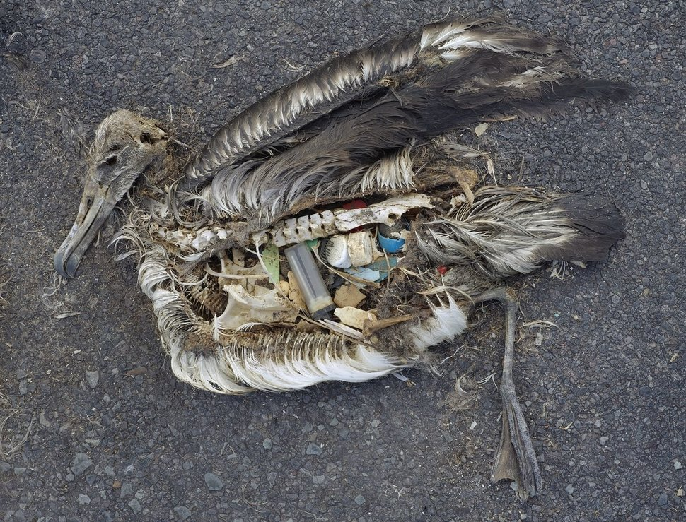
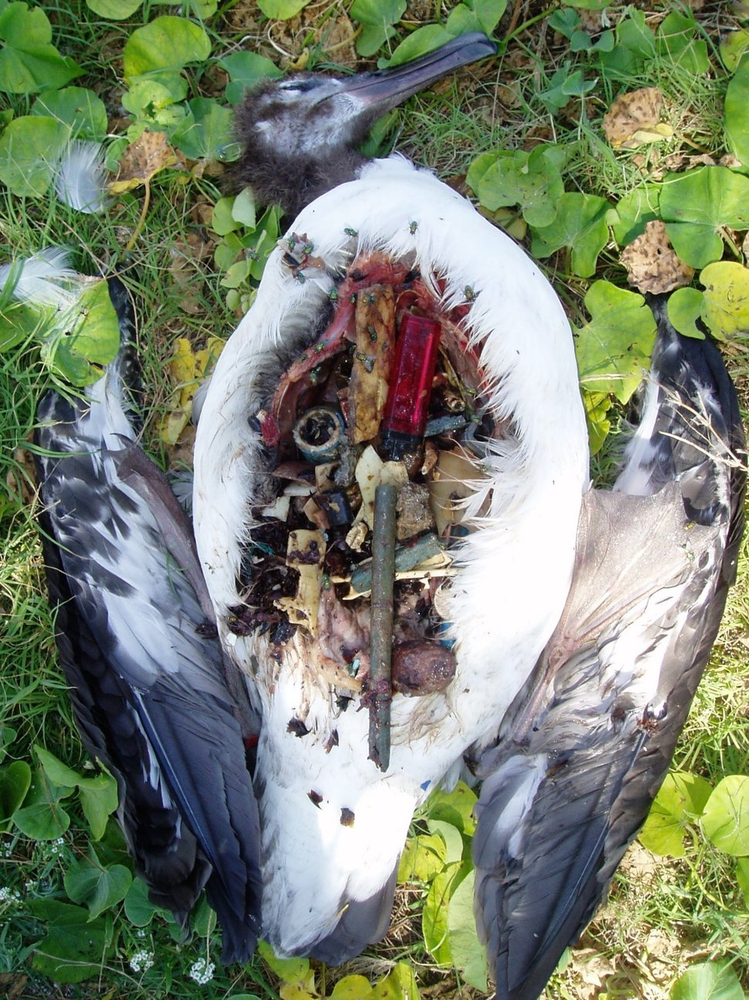
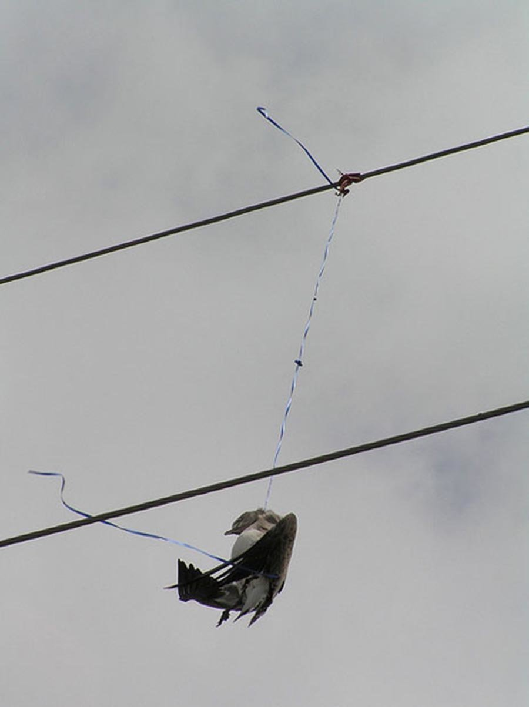

Muestrario
1 / 4

Tortuga con plástico alrededor de su concha. Departamento de Conservación de Missouri
2 / 4

Un polluelo muerto de albatross con restos marinos de plástico en su estómago. Fotografiado en el Refugio nacional de vida salvaje Midway Atoll,en el Océano Pacífico en septiembre de 2009.
3 / 4

Un albatros de Laysan fallecido, descansa en el suelo en el atolón de Midway, con el estómago expuesto, que se nota lleno de desechos que consumió en su habitat costero. Los animales marinos no pueden digerir los desechos y muchas veces mueren por inanición. NOAA. Hay algunas pequeñas maneras en que todos podemos ayudar a frenar la cantidad de plástico que se desecha a diario: Comienza por consumir menos artículos de un solo uso, como popotes y contenedores para llevar, así como reciclar lo que tenga un doble uso.
4 / 4

Pájaro que aparentemente murió estrangulado por la cuerda de un globo. Pamela Denmon USFWS.*
5 / 4

Mapa de los rios de México
Las cuatro fotos y sus comentarios correspondentes se tomaron del artículo: UN MUNDO MEJOR 17 fotos que muestran
cómo daña la basura a los animales marinos de Sarah Ruiz-Grossman Associate Impact Editor, The Huffington Post.
http://www.huffingtonpost.com.mx/2017/05/05/fotos-de-animales-muertos-a-causa-de-la-basura-que-llega-al-ocea_a_22071427/
el artículo se publicó originalmente en The HuffPost EU.
Video cortesía de un celular.
Contaminación del mundo (animación)